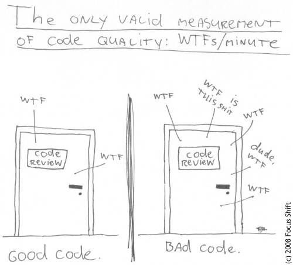

General Coding Guidelines
If you are new to the C/C++ language and are looking for some pointers to improve your coding style, this page is for you! These suggestions should help you avoid common pitfalls, and make your code easier to manage.
Style Consistency
This is a big one.
When programming, it is important to choose a coding style that you prefer and stick with it.
For instance, if you prefer using 4 spaces to indent your code, use that everywhere – don’t mix tabs and spaces!
If your variables are snake_case or camelCase – use the same format everywhere.
This goes for function naming too.
Some additional style guidelines:
Try to keep lines 80 characters or less. This will promote less indentation and better coding design, as well as avoid insanely long variable names. If you have more than 3 levels of indentation, it’s probably time to rethink your code.
Use consistent bracing formats; if your braces all start on a new line, don’t mix them. It is especially helpful to always use braces even on single-line conditional statements as it will avoid spurious bugs from popping up.
Try to keep functions at 100 lines or less. Any more and the function should be broken out, as this will increase readability and make it easier for you 6 months later to understand what you wrote.
It doesn’t really matter what your style is as long as it is consistent! People will be more inclined to help and contribute to your code if you keep it neat.
This also applies when you are the one contributing to another project: use their codestyle, not yours, even if you don’t like it.
Use Descriptive Naming
This may seem like a relatively minor one, but it’s still important: try to give functions and variables useful and unique names.
For example, int player_x is more descriptive than int x, and void handle_user_input(void) is more meaningful than void do_things(void).
The name should tell you why it exists, what it does, and how it is used.
If a name requires a comment, then the name is useless.
Some helpful tips:
Use pronounceable names.
Beware of using names which vary in small ways. (e.g. “player_x” and “player_xx”).
Use intention-revealing names.
Don’t be afraid of using names that are a bit longer than what you may be used to. Probably not 50 chars long, sure, but you get the point.
Write comments intelligently
In a perfect world, code should have a minimal number of comments in it because it should all be self-explanatory. Especially if there’s a document along side that explains architecture choices, workflows etc.
Comments aren’t code; they are for a human to convey what is going on and why in a particular portion of code, to another human. They should ideally be kept fairly short and to the point (“K.I.S.S” = Keep It Short and Simple”). Don’t write comments just because you’ve been told to at some point: the other human in question can read just fine and doesn’t want to waste time reading that “return val;” indeed “returns the value”.
It is much easier to read code without having to also read comments that don’t convey any helpful information. Instead, provide useful information when needed, in particular when someone may be tempted to change some code that probably shouldn’t be without a lot of thought first, or where some algorithm is complex to understand for someone new on the project and only reading the code to understand what is happening would take too long pointlessly (reverse-engineering source code can annoyingly take a lot of time).
As such, and especially for complex code, focus rather on explaining why something is written that way, and even why not written in another way (i.e. some edge case may not work with an alternative algorithm, some use case may have inferior performance, etc.). Time will be saved that way for future refactors, whether it’s done by you, or even more so by someone else that may now know the context of the code as much as you.
And remember this: having too many comments leads to issues where a) the comments don’t match the code, b) they are either superfluous or useless, c) they are flat out incorrect or outdated, or d) they add noise to the code itself and make it more difficult to read.
These are examples of bad comments that add no value: remember, good self-explanatory naming and simple code provide better information than comments do.
// locates the first occurrence of the character in the string
void findFirstChar(string_t* str) {
...
}
// check if the string is empty
bool isStringEmpty(string_t* str) {
return str->len == 0;
}
More food for thought about this topic: https://blog.codinghorror.com/coding-without-comments/
Avoid Commenting Unused Code
A lot of people when they program will change a few lines, or try many different iterations of code in an attempt to get something working. The code that doesn’t make it is usually commented out like below:
y = 10 + y ^ 7;
// y = 10 + y ^ 6;
// y = 10;
// y = x + 76;
This hinders readability and makes the whole codebase reek.
Unused code should be purged from the source file; and revision control (e.g. git) should be used to keep track of these modifications instead.
If you really need sections of code that can be enabled/disabled, then consider using a define that is passed via the compiler to toggle the option.
Or in a pinch, use #if 0 \ code \ #endif.
Include File Recommendations
Include files can be one of the most hated aspects of C – so it is important to use them correctly to prevent losing your mind. When working with multiple files, there is the concept of a “source” file and a “header” file. The source file includes all the code/variables that the program needs to work. The header file exposes an interface that allows other source files to use functions and/or variables defined in the corresponding source file. The below example shows the proper and recommended implementation of the source and header files.
source.c:
#include "source.h"
#include <stdio.h>
#include <stdlib.h>
static void my_internal_source_function(void) {
// do some stuff in here
}
void my_external_source_function(void) {
my_internal_source_function();
// do some other stuff in here
}
source.h:
#ifndef SOURCE_H
#define SOURCE_H
#include "some_other_header.h"
#ifdef __cplusplus
extern "C" {
#endif
void my_external_source_function(void);
#ifdef __cplusplus
}
#endif
#endif
Here are the important takeaways from the above example:
The first line in the source file should be the corresponding header file for the source interface. Other headers can then be included after; with system/toolchain headers last. This ensures that the header includes all the things necessary to compile it.
The source file uses the static keyword in front of a function to indicate that it can only be used in the source.c file. This prevents other source files from attempting to use it. It is a good idea to get into the habit of labeling functions in this way if they are not used anywhere except for the file they are in.
The header includes so-called “header guards” (the
#ifdef SOURCE_H/#define SOURCE_Hlines), which are used to prevent the header from being included multiple times in the same source file.The
#ifdef __cpluspluslines are used to prevent a C++ compiler from mangling the names of the header functions. It is a good idea to add this, even if you are working on a C-only project as it will save you any headache if a C++ compiler tries to compile the header.The external source function is represented as a “prototype” inside the header. This prototype tells the rest of the source files the arguments and return of the function, but does not define the implementation. It is the responsibility of the linker to take all the compiled source files and find the corresponding functions.
There should be one header file for one source file which defines the external functions/variables in the source file. Having “global” header files (i.e. a header file that includes a bunch of other headers and functions) is prone to many issues during linking, affects code modularity, and maintenance, as well as adding to compile time. Putting all possible headers in one application header is as wrong as wrong can be.
Proper Prototyping
In C, if a function takes no arguments it should be represented as foo(void); in the prototype, not foo();.
Contrary to what it might seem, foo(); indicates that the function can take any number of arguments.
In C++, you should use foo(); without the void argument.
In C23, foo(); is now identical to foo(void); (it is still recommended to use foo(void); for portability).
What not to put in header files
Here are the following things that should not be put in header files in C:
Function implementations. Only function prototypes should be put in header files.
Variable declarations. If you need to have a “global variable” (you likely don’t), then the global variable should be declared in a source file and then included in the header using the extern keyword (e.g.
extern global_variable[100];).
The reason you shouldn’t do the above is that the #include preprocessor command literally performs a copy/paste of one file into another.
If a header is used in two different source files, then the function or variable will be duplicated twice (include guards cannot prevent this, they only prevent inclusion in a single source file!).
Even worse is making the function/variable “static” in the header, which makes each file has its own implementation – it will still compile, but it most certainly is not what you intended!
If you ever see code or variables that are defined in a header, run far away… or try to fix it.
Avoid Global Variables
Global variables are bad. These are variables which are defined outside of a function.
Here’s why you shouldn’t use them:
Global variables can be modified by any section of code, making it difficult to remember every possible use.
A global variable can have no access control. It can not be limited to some parts of the program.
Using global variables causes namespace pollution. This may lead to unnecessarily reassigning a global value.
So, most of the time, and unless you have a really good excuse, don’t use global variables. There are better alternatives to using global variables, described below:
Proper Scoping
“Scope” is an important part of C programming.
Every opening brace { is the start of a new scope, and every ending brace } the end of the previous scope.
Global variables, which are not inside any braces, are declared in what’s known as the global or file scope.
Variables declared in one scope can only be accessed from the same scope, or from scopes inside of it.
You want to make sure that you declare variables are in the narrowest scope possible.
Properly scoping your code instead of using globals for everything makes it easier to think about. For example, the following code uses a global variable my_var:
void my_func(void) {
my_var = 0;
do_some_thing();
printf("%u\n", my_var);
do_some_other_thing();
printf("%u\n", my_var);
}
What values of my_var get printed? It might still be 0, or it could be 1, or 42, or -1, or the address of a string containing a proof of the Riemann hypothesis (though the latter is exceedingly unlikely). It’s impossible to tell without looking at the definitions for do_some_thing and do_some_other_thing. If each of these functions called several other functions, you might have to dig through dozens of functions to say for certain that my_var is not modified. Compare this to the same code written using more proper scoping:
void my_func(void) {
int24_t my_var = 0;
do_some_thing();
printf("%u\n", my_var);
do_some_other_thing(my_var);
printf("%u\n", my_var);
}
In this code, it’s clear that the function will print 0 both times, as my_var is not in scope for do_some_thing, and is only passed by value to do_some_other_thing. It’s also clear that do_some_other_thing uses the value of my_var.
Sure, in real code, functions and variables will have more descriptive names that tell you what they do. But properly scoping your code allows you to only have to think about your program in small chunks, rather than having to think about every other function in the entire codebase that might be able to modify a variable.
There are other benefits to proper scoping as well. It helps reduce namespace pollution, and the compiler will be able to provide better optimizations, too.
Using the static keyword
The static keyword is helpful when trying to avoid dynamic allocation and avoiding global variables.
The below example shows an array that is globally allocated by malloc, which is not recommended.
char *big_text_array;
char *alloc_array(void) {
big_text_array = malloc(16000);
return big_text_array;
}
Alternatively, the static keyword can be used to allocate the buffer.
The static keyword changes the storage space for the variable, and allows it to persist as if it were a global variable.
The variable maintains the contents it previously held when the function was last called.
Rather than using dynamic allocation to create the array, static allocation can be used instead as shown below:
char *return_array(void) {
static char big_text_array[16000];
return big_text_array;
}
Using structures
Structures are a helpful way to encapsulate particular objects used in a program. For example, you might have different objects for a player, enemies, and props when creating a game. A structure allows you to put all the relevant information into a single object that can then be passed around to different functions.
For example, the following code snippet creates a player structure:
struct player {
int x;
int y;
};
void set_player_position(struct player *player) {
player->x = 20;
player->y = 10;
}
It is recommended to avoid “typedef” on structures. This is because it is hiding the underlying type, and makes it harder on readability.
Avoid Dynamic Allocation
Dynamic allocation (e.g. malloc, calloc, realloc) should be avoided as much as possible. This is because it is an expensive operation and uses a few kilobytes of space for the function itself.
On the CE, the heap (the region of memory that the above functions allocate from) is stored in the same region of memory that uninitialized data is stored in (referred to as the “bss” section). This means that any uninitialized variables not on the stack will automatically use the same region of memory. Since this region is a fixed known size (which is not that large, up to ≈60KB total), there is next to zero usefulness in using malloc to perform memory allocation.
Dynamic allocation can also lead to fragmentation of the heap when running, making programs be extremely unstable and prone to leaks and crashes. You also aren’t guaranteed that you will get a valid memory pointer – and thus have no way to recover other than to quit your program!
In conclusion, avoid dynamic allocation unless you really know what you’re doing. Check the paragraph below for alternatives.
Ways to avoid dynamic allocation
The following tips can help avoid dynamic allocation.
Statically allocate variables with the
statickeyword. See here for more info.Try stack-based allocation using the
allocafunction (but watch out, the stack is only about 4KB large).Consider why you are allocating memory at runtime in the first place.
General Guidelines
Limit Magic Numbers
Magic numbers are special numbers that one might put in code when it is 2AM and it’s the 50th time you’ve recompiled just to get a pixel positioned perfectly.
For example, x = x + 29 + 52 - 3 contains so-called “magic numbers” – numbers that aren’t tied to a variable or have any real context for why they contain the value they do.
When updating code 6 months down the road, you won’t have any clue what these numbers meant.
A better solution is to use a macro such as #define X_OFFSET (29 + 52 - 3) where the intent of the numbers is less obscured.
Use const as much as possible
When a variable will not actually change over time, mark it as const!
This helps with performance (the compiler will produce better code), conveys the intent more clearly, and leads to fewer bugs.
More information: https://www.cppstories.com/2016/12/please-declare-your-variables-as-const/
Avoid explicit casting
A cast is nothing more than a lie to the compiler, claiming you know better than the compiler what is happening.
Casting can do nefarious things, such as masking away a const, strip an object of its type, and makes the code harder to understand.
If you must use explicit casting, ensure that it is needed and you aren’t trying to hack something in.
More information: https://gustedt.wordpress.com/2014/04/02/dont-use-casts-i/
Use Static Analysis Tools
Static Analysis examines the code without executing the program in order to find common programming issues and flaw/bugs that may not be intended. It is a great way to improve the reliability and ensure that you are following the best programming practices. There are many static analysis tools available, some better than others. Some common ones include:
Cppcheck
Clang Static Analyzer (scan-build)
Coverity
Cppcheck is the easiest one to use with the CE C toolchain, but it is also fairly limited.
Your IDE may also have a static analyzer built-in.
Make sure to enable warning flags on the compiler, too (-Wall -Wextra)